In this module, you will create a new task definition and service to run the sample application we built in the previous module. To support this service, you’ll need to create an AWS Identity and Access Management (IAM) role to allow our application to read from and write to the Amazon DynamoDB table it uses to store data. We’ll also need to create an Application Load Balancer to distribute traffic across the running tasks that are being ran by the service.
Task roles are IAM roles that can be used by the containers in the task. For our application, we need to grant permission to read from and write to the Amazon DynamoDB table we created in the last module.
✅ Step-by-step Instruction
Go to the AWS Management Console, click Services then select IAM under Security, Identity & Compliance.
Click on Roles in the left-hand navigation.
Click Create role.
First, we’ll configure which AWS service can assume this role. Click Elastic Container Service from the Choose the service that will use this role list.
Next, choose Elastic Container Service Task from Select your use case.
Click Next: Permissions.
Click Create policy. The visual policy editor will open in a new tab.
Click on Choose a service and click DynamoDB.
Click on Actions.
Expand the Read permissions and check the Scan and GetItem checkboxes.
Expand the Write permissions and check the PutItem and DeleteItem checkboxes.
Click Resources to limit the role to the quotes table.
Click Add ARN next to table.
Enter us-east-1 in Region, your Account ID in Account, and quotes in Table name.
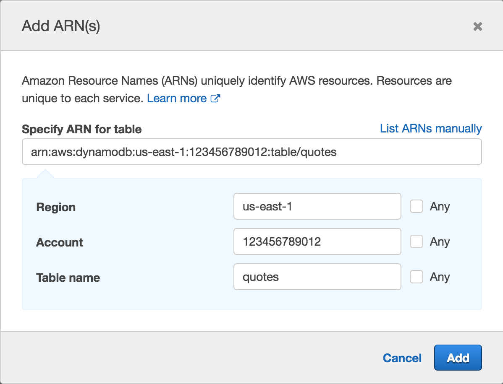
Click Add.
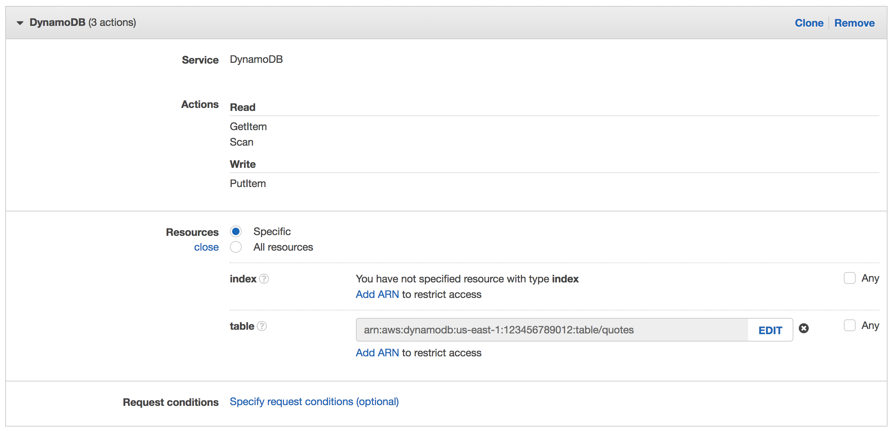
This will result in a policy allowing dynamodb:PutItem, dynamodb:Scan, dynamodb:DeleteItem, and dyanmodb:GetItem.
Click Review policy.
Enter WorkshopAppPolicy in Name.
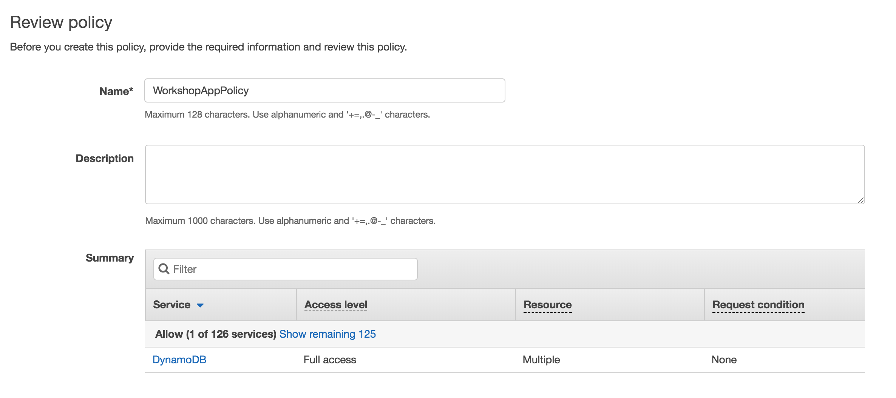
Click Create policy.
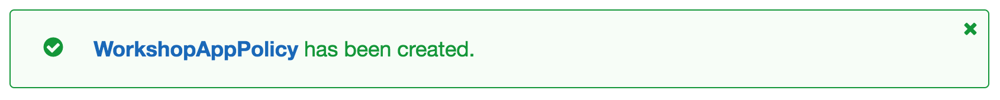
Return to the original tab where you were creating the role. Click Refresh and type WorkshopAppPolicy in the Filter textbox. Check the WorkshopAppPolicy checkbox. Click Next: Review.
Enter WorkshopAppRole in Role name.
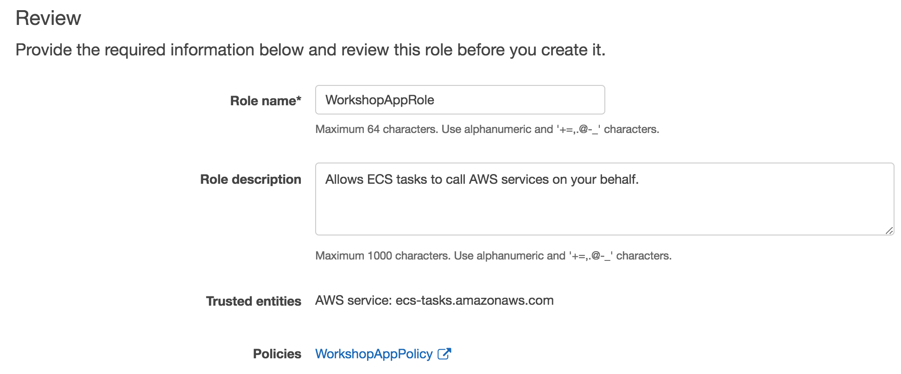
Click Create role.
Task definitions are blueprints for your application. They include details about what containers to run, their resource requirements, environment settings, networking configuration, and task role permission settings. In this step, we’ll create a task definition for our application. Complete either the directions using the AWS Management Console or the AWS Command Line Interface.
✅ Step-by-step Instructions (AWS Management Console)
Go to the AWS Management Console, click Services then select Elastic Container Service under Compute.
Click Task Definitions in the left-hand navigation.
Click Create new Task Definition.
Click Fargate to select the Fargate launch type.
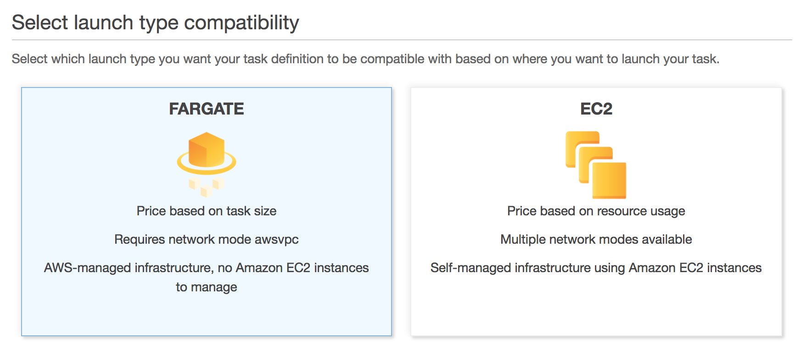
Click Next step.
Enter workshop into Task Definition Name.
Select WorkshopAppRole from Task Role.
Select 0.5GB from Task memory (GB).
Select 0.25 vCPU from Task CPU (vCPU).
Click Add container.
Enter workshop into Container name.
In Image, paste the repository URI for the Docker image you built and pushed in the previous module. For example, if your Account ID was 123456789012, then you’d enter: 123456789012.dkr.ecr.us-east-1.amazonaws.com/workshop
Enter 80 into Container port and select tcp from Protocol in Port mappings.
Click Add.
Click Create.
✅ Step-by-step Instructions (AWS CLI)
Switch to the tab where you have your Cloud9 environment opened.
Open the file fargate-workshop-app/ecs/task_definition.json by navigating to it in the environment tree and double clicking the filename.
The file has the following contents:
{
"family": "workshop",
"requiresCompatibilities": ["FARGATE"],
"cpu": "256",
"memory": "512",
"networkMode": "awsvpc",
"taskRoleArn": "arn:aws:iam::YOUR_ACCOUNT_ID_HERE:role/WorkshopAppRole",
"executionRoleArn": "arn:aws:iam::YOUR_ACCOUNT_ID_HERE:role/ecsTaskExecutionRole",
"containerDefinitions": [
{
"name": "workshop",
"image": "YOUR_ACCOUNT_ID_HERE.dkr.ecr.us-east-1.amazonaws.com/workshop",
"essential": true,
"logConfiguration": {
"logDriver": "awslogs",
"options": {
"awslogs-group": "/ecs/workshop",
"awslogs-region": "us-east-1",
"awslogs-stream-prefix": "ecs"
}
},
"portMappings": [
{
"protocol": "tcp",
"containerPort": 80
}
]
}
]
}Replace the YOUR_ACCOUNT_ID_HERE placeholders with your Account ID. Save the file by going to File and selecting Save in the menu bar, or pressing ⌘-S (macOS) or Ctrl-S (Windows / Linux).
Create a new task definition from the JSON file by running this command in your Cloud9 terminal:
aws ecs register-task-definition --cli-input-json file://~/environment/fargate-workshop-app/ecs/task_definition.jsonCreate the CloudWatch Logs log group /ecs/workshop configured in your new task definition by running this command in your Cloud9 terminal:
aws logs create-log-group --log-group-name /ecs/workshop✅ Step-by-step Instructions
Go to the AWS Management Console, click Services then select EC2 under Compute.
Click on Load Balancers in the left-hand navigation.
Click Create Load Balancer.
In Application Load Balancer, click Create.
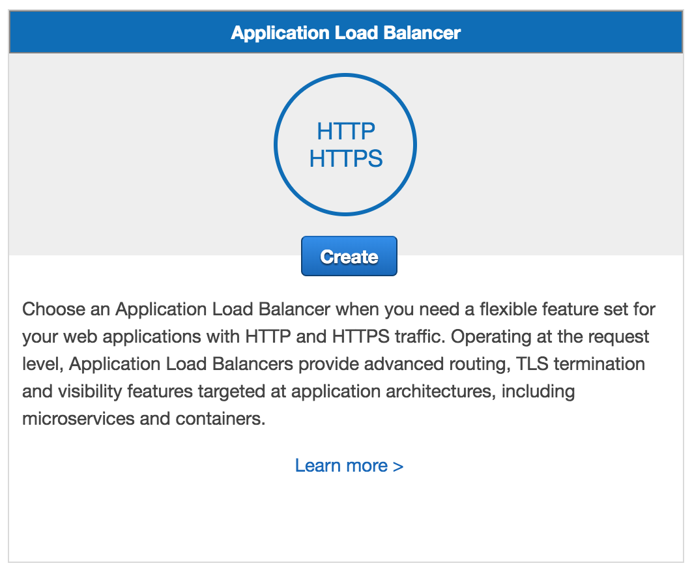
Enter workshop into Name.
Select the VPC created in the first module when you created the ECS cluster in the first module. If you need to find the VPC ID do one of the following:
AWS Management Console
Click on Services, right-click on VPC under Networking & Content Delivery and click Open Link in New Tab.
Click on Your VPCs in the left-hand navigation.
Click on each VPC, and click on its Tags tab. The VPC you’re looking for has a tag with Key aws:cloudformation:stack-name and Value EC2ContainerService-workshop
AWS CLI
Run the following command in your Cloud9 terminal:
aws ec2 describe-vpcs --query Vpcs[0].VpcId --output text \
--filters Name=tag:aws:cloudformation:stack-name,Values=EC2ContainerService-workshopSelect all Availability Zones configured for the VPC by checking each checkbox.
Click Next: Configure Security Settings.
The wizard will warn you that you’ve not established a secure listener as we didn’t define an HTTPS listener. Click Next: Configure Security Groups.
Tick the Create a new security group radio button. This will create a new security group which will permit traffic to port 80 by default.
Click Next: Configure Routing.
Enter workshop into Name.
Enter 80 into Port.
Select ip from Target type.
Click Next: Register Targets. We won’t register anything as we’ll rely on Amazon ECS to manage our Target Group for us.
Click Next: Review. Review the details you configured, then click Create.
Click on the workshop link to view details about the new load balancer.
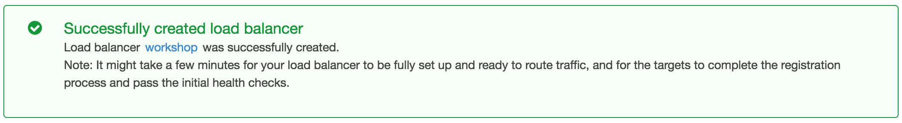
Click on the workshop link to view details about the new load balancer.
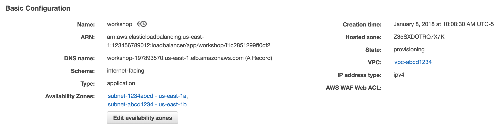
Take note of the DNSName. This will be the hostname of our load balancer that we’ll use to hit our service after we complete the next set of steps.
Services maintain a desired number of tasks and manage registration of those tasks with a load balancer. In this section, we’ll create a new service for our Docker container.
✅ Step-by-step Instructions (AWS Management Console)
Go to the AWS Management Console, click Services then select Elastic Container Service under Compute.
Click workshop in the cluster list.
The Services tab should be selected. Click Create.
Tick the FARGATE radio button in Launch Type.
Select workshop:1 from Task Definition.
Enter workshop into Service name.
Enter 1 into Number of tasks.
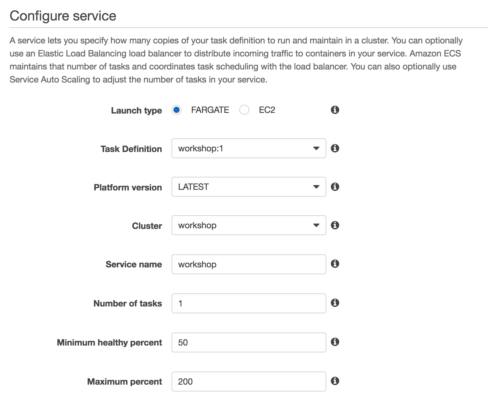
Click Next step.
Select the VPC created in the first module when you created the ECS cluster in the first module. If you need to find the VPC ID do one of the following:
AWS Management Console
Click on Services, right-click on VPC under Networking & Content Delivery and click Open Link in New Tab.
Click on Your VPCs in the left-hand navigation.
Click on each VPC, and click on its Tags tab. The VPC you’re looking for has a tag with Key aws:cloudformation:stack-name and Value EC2ContainerService-workshop
AWS CLI
Run the following command in your Cloud9 terminal:
aws ec2 describe-vpcs --query Vpcs[0].VpcId --output text \
--filters Name=tag:aws:cloudformation:stack-name,Values=EC2ContainerService-workshopSelect both subnets in Subnets.
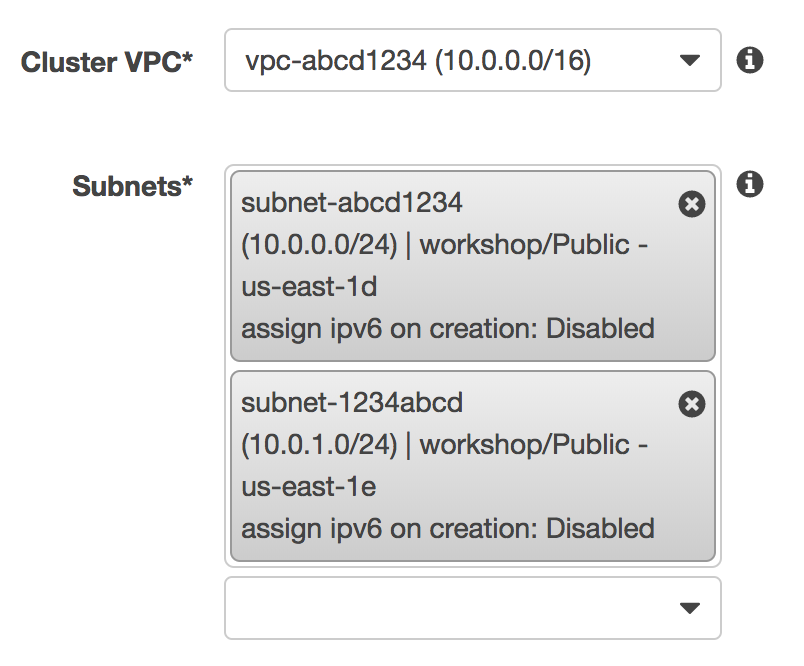
Select ENABLED from Auto-assign public IP. This allows your tasks to retrieve the Docker image from Amazon ECR and stream logs to Amazon CloudWatch Logs.
Under Load Balancing, tick the Application Load Balancer radio button.
Click Add to load balanacer.
Select 80:HTTP from Listener port.
Select workshop from Target group name.
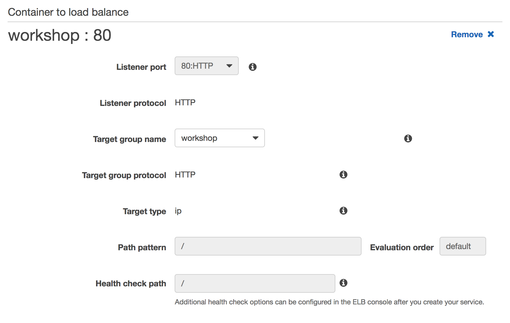
Click Next step.
The next page allows you to define an Auto Scaling policy. Leave this set to Do not adjust the service’s desired count for now and click Next step.
Review your settings and click Create Service.
The service will now start your task. Click View Service and wait for your task to transition to RUNNING.
Hit your task via the load balancer through the DNSName you noted in Create an Application Load Balancer. For example:
curl -Ss http://workshop-123456789.us-east-1.elb.amazonaws.com/quotes | jq✅ Step-by-step Instructions (AWS CLI)
Switch to the tab where you have your Cloud9 environment opened.
Open the file fargate-workshop-app/ecs/service.json by navigating to it in the environment tree and double clicking the filename.
Inspect the file contents. There are several placeholders in this file to fill-in: the ARN of the target group and the IDs of the subnets and security group created for us in the first run wizard.
{
"cluster": "workshop",
"serviceName": "workshop",
"taskDefinition": "workshop:1",
"desiredCount": 1,
"launchType": "FARGATE",
"platformVersion": "LATEST",
"loadBalancers": [
{
"targetGroupArn": "YOUR_TARGET_GROUP_ARN_HERE",
"containerName": "workshop",
"containerPort": 80
}
],
"networkConfiguration": {
"awsvpcConfiguration": {
"subnets": ["YOUR_SUBNET1_ID_HERE", "YOUR_SUBNET2_ID_HERE"],
"securityGroups": ["YOUR_SECURITY_GROUP_ID_HERE"],
"assignPublicIp": "ENABLED"
}
}
}Fill in the YOUR_TARGET_GROUP_ARN_HERE placeholder. To find the ARN of the target group, run this command in the Cloud9 terminal:
aws elbv2 describe-target-groups --names workshop --query TargetGroups[0].TargetGroupArn --output textFill in the YOUR_SUBNET1_ID_HERE and YOUR_SUBNET2_ID_HERE placeholders. To find the IDs of the subnets created in the first run wizard, run this command in the Cloud9 terminal:
aws ec2 describe-subnets --query Subnets[].SubnetId --output text \
--filters Name=tag:aws:cloudformation:stack-name,Values=EC2ContainerService-workshopFill in the YOUR_SECURITY_GROUP_ID_HERE placeholder. To find the ID of the security group created in the first run wizard, run this command in the Cloud9 terminal:
aws ec2 describe-security-groups --query SecurityGroups[].GroupId --output text \
--filters Name=tag:aws:cloudformation:stack-name,Values=EC2ContainerService-workshopSave the file by going to File and selecting Save in the menu bar, or pressing ⌘-S (macOS) or Ctrl-S (Windows / Linux).
Now that all the values are filled-in, we can create the service by running this command in the Cloud9 terminal:
aws ecs create-service --cli-input-json file://~/environment/fargate-workshop-app/ecs/service.jsonThe service will now start your task. Wait for your task to transition to RUNNING. You can view the status of your task by running this in your Cloud9 terminal:
aws ecs describe-tasks \
--cluster workshop \
--tasks `aws ecs list-tasks --service-name workshop --cluster workshop --query taskArns[] --output text` \
--query tasks[].lastStatus \
--output textHit your task via the load balancer through the DNSName you noted in Create an Application Load Balancer. For example:
curl -Ss http://workshop-123456789.us-east-1.elb.amazonaws.com/quotes | jq🔑 Amazon ECS services keep the desired number of tasks running and integrate with Elastic Load Balancing to distribute traffic across them.
🛠️ You’ve deployed the sample application as a service behind an Application Load Balancer.
🎉 You’ve completed this section!
✅ If you want to dive into CI/CD, try our next section, Build a Continuous Deployment Pipeline, wherein you’ll use AWS CodeBuild to automatically build your container and create a CI/CD pipeline with AWS CodePipeline to orchestrate the process and deploy it to Amazon ECS.